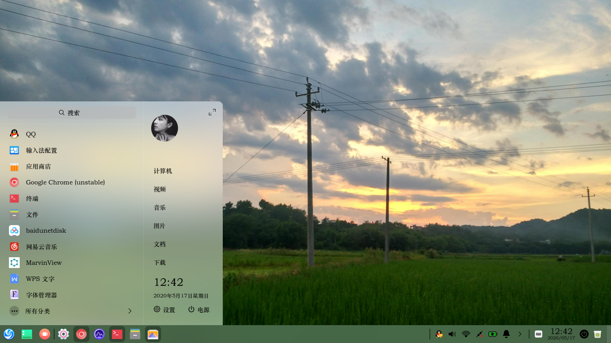
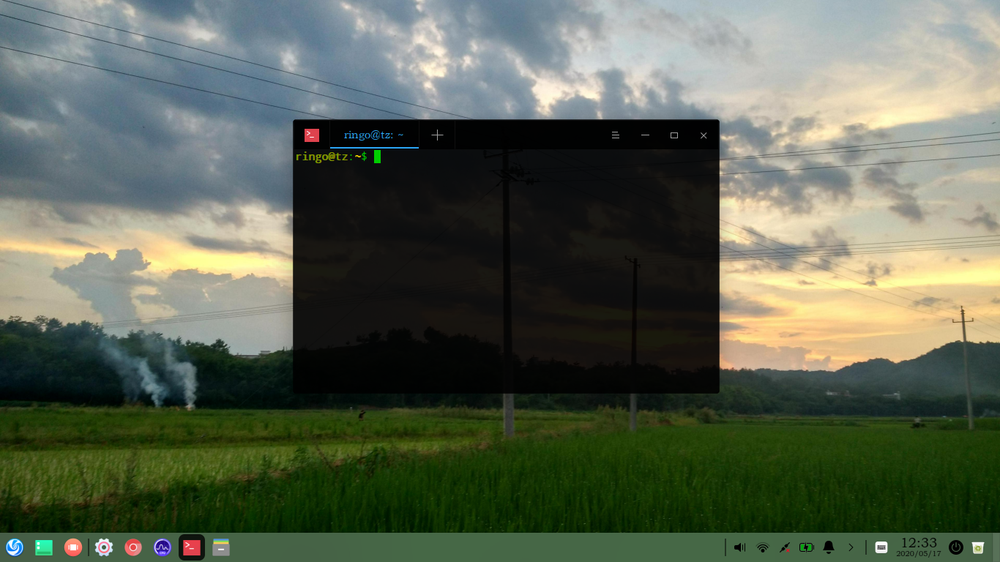

<!DOCTYPE html>


<html lang="zh-CN">
  

    <head>
      <meta charset="utf-8" />
        
      <meta
        name="viewport"
        content="width=device-width, initial-scale=1, maximum-scale=1"
      />
      <title>折腾Deepin的二三事 |  十年夜雨十年灯</title>
  <meta name="generator" content="hexo-theme-ayer">
      
      <link rel="shortcut icon" href="/images/23.svg" />
       
<link rel="stylesheet" href="/dist/main.css">

      
<link rel="stylesheet" href="/css/fonts/remixicon.css">

      
<link rel="stylesheet" href="/css/custom.css">
 
      <script src="https://cdn.staticfile.org/pace/1.2.4/pace.min.js"></script>
       
 

      <link
        rel="stylesheet"
        href="https://cdn.jsdelivr.net/npm/@sweetalert2/theme-bulma@5.0.1/bulma.min.css"
      />
      <script src="https://cdn.jsdelivr.net/npm/sweetalert2@11.0.19/dist/sweetalert2.min.js"></script>

      <!-- mermaid -->
      
      <style>
        .swal2-styled.swal2-confirm {
          font-size: 1.6rem;
        }
      </style>
    </head>
  </html>
</html>


<body>
  <div id="app">
    
      
      <canvas width="1777" height="841"
        style="position: fixed; left: 0px; top: 0px; z-index: 99999; pointer-events: none;"></canvas>
      
    <main class="content on">
      <section class="outer">
  <article
  id="post-折腾Deepin的二三事"
  class="article article-type-post"
  itemscope
  itemprop="blogPost"
  data-scroll-reveal
>
  <div class="article-inner">
    
    <header class="article-header">
       
<h1 class="article-title sea-center" style="border-left:0" itemprop="name">
  折腾Deepin的二三事
</h1>
 

      
    </header>
     
    <div class="article-meta">
      <a href="/2020/05/09/%E6%8A%98%E8%85%BEDeepin%E7%9A%84%E4%BA%8C%E4%B8%89%E4%BA%8B/" class="article-date">
  <time datetime="2020-05-09T15:22:31.000Z" itemprop="datePublished">2020-05-09</time>
</a> 
  <div class="article-category">
    <a class="article-category-link" href="/categories/%E8%AE%A1%E7%AE%97%E6%9C%BA/">计算机</a>
  </div>
  
<div class="word_count">
    <span class="post-time">
        <span class="post-meta-item-icon">
            <i class="ri-quill-pen-line"></i>
            <span class="post-meta-item-text"> 字数统计:</span>
            <span class="post-count">1.4k</span>
        </span>
    </span>

    <span class="post-time">
        &nbsp; | &nbsp;
        <span class="post-meta-item-icon">
            <i class="ri-book-open-line"></i>
            <span class="post-meta-item-text"> 阅读时长≈</span>
            <span class="post-count">4 分钟</span>
        </span>
    </span>
</div>
 
    </div>
      
    <div class="tocbot"></div>


  
    <div class="article-entry" itemprop="articleBody">
       
  <h3><span id="折腾deepin的二三事">折腾Deepin的二三事</span></h3><p>​        上学期换了新电脑，想着旧电脑放着也是吃灰，便盘算着买个二手的固态硬盘，再装上Linux，这样就不用两个系统切换了。于是在某宝花了七十多买了一块二手ssd，把光驱拆了装了上去。接下来便是装系统了，由于之前一直用的是Ubuntu，但Ubuntu原生的桌面系统过于丑陋，每次都要经过一番配置美化才算是能看，而我又常常瞎折腾导致系统损坏必须重装，而且即便是原生的gnome,在Ubuntu上也是非常卡顿，因此，这一次打算换一种体验，去某Linux社区搜索了一番，发现大致推荐的几个发行版是elementary OS，Linux mint, Manjaro Linux, kubuntu，Deepin， opensuse等等。仔细搜了一下，Manjaro 看起来是其中最漂亮的，但可惜它是Arch系的，估计比Ubuntu还要费时间折腾，最终只能尝试了一下deepin。<a id="more"></a></p>
<p>​        最开始下载的是deepin 15.11 ，感觉非常不错，桌面系统是所谓自研的DDE，其实看起来更像是gnome的终极魔改版，无论是侧边设置栏，还是底部任务栏，以及启动器界面感觉都很舒服，有点像mac 与win 的结合体，基本不用任何美化配置，只需要把win的字体复制过来即可。而最让人舒服的是deepin整个的应用生态，自带的应用商店里有常用的各类软件工具，不论是vscode ,新立得，atom, Linux wps , 网易云等等都可直接在应用商店直接安装，gui还是要比apt命令或是dpkg好用的多的。其实最好的一点还有，deepin预装了wine,而且针对系统对wine 进行了大量的优化，使得deepin-wine 使用起来非常流畅，使用体验与Ubuntu上单纯的wine简直是云泥之别，尽管我一直认为在Linux上使用win的软件是一件很蠢的事，但好歹可以正常流畅使用QQ倒也不错，而且还能用不限速的迅雷。</p>
<p>​        系统开机之后其它硬盘是自动挂载的（辣鸡Ubuntu），而且移动文件这些没有任何权限问题。然后是折腾软件，先装了linux Gaussian，又装了anaconda配置python。还有就是deepin自带的浏览器是chrome而非firefox，虽然个人感觉不如后者流畅但各种数据可以直接同步还是很爽的。然后是安装tmux，写个小命令连锐捷，基本可以做到直接插网线就能用。当然，deepin也并非没有缺点，比如dde的启动速度实在是慢，开机输入密码要一分钟之后才能顺利启动桌面加载壁纸，而且有时锁屏界面壁纸直接加载不出全白，甚至启动不了只能重启电脑。</p>
<p>​        因为一直想把旧电脑放在实验室，所以就想着能不能再deepin上装一个类似chemdraw的软件，然后找到了marvin，虽然功能简陋，但画个结构式算个分子量还是可以的。然后是装一个核磁软件mnova, 巧的是mnova刚好有linux版本，于是作死开始了。我在安装mnova的时候发现deepin 15.11的内核版本居然只有4.3.0，mnova根本不支持。然后我就按网上的方法升级了内核，结果整个系统就崩溃了。u盘修复了半天也没搞定，只能重装系统。下载镜像的时候发现deepin已经升级到v20版本了，内核也升级了。想着要不尝试一下新系统？于是下载镜像然后再用全盘安装，然后就遇上了上文说的dde无法启动问题，甚至重启之后卡在开机界面。于是只能把硬盘清空重来一遍，使用手动安装，总算是进了系统。进了系统之后发现之前的侧边栏设置变成了窗口化的，而且系统也变得卡顿起来了，当然这是beta版，可能后续会优化吧。还有就是文件管理器没法直接右键以管理员模式打开，在配置一些系统文件的时候就很不方便，总是权限问题。没办法还是要安装一个nautilus不然没法用。而默认浏览器变成了chromium没法登陆同步数据，还要重下chrome。安装软件问题就更大了，20版没有镜像没法换源，下载速度很慢，而且应用商店明显很多软件没法用。之前要装的核磁软件也没法安装。</p>
<p>​        折腾到这里，实在是太累了，所以十分不爽地写了这篇文章来吐槽。这也证明，想要能替代windows的Linux实在是太难了，至少对于我来说。然后我进入了某种贤者模式，我开始思考我为什么要玩Linux，体验不一样的系统环境？享受Gaussian把cpu跑到99的快感？还是只是单纯觉得cool? 我也不知道。不过我感觉自己已经有点厌倦了，就这样吧，也许哪天一时兴起？发现啥有趣的东西，就又开始了，谁知道呢？人总是会重复做一些动机不明、心血来潮但又毫无意义的事。<br><br></p>
 
      <!-- reward -->
      
    </div>
    

    <!-- copyright -->
    
    <footer class="article-footer">
       
  <ul class="article-tag-list" itemprop="keywords"><li class="article-tag-list-item"><a class="article-tag-list-link" href="/tags/deepin/" rel="tag">deepin</a></li><li class="article-tag-list-item"><a class="article-tag-list-link" href="/tags/linux/" rel="tag">linux</a></li></ul>

    </footer>
  </div>

   
  <nav class="article-nav">
    
      <a href="/2020/10/11/%E5%91%A8%E6%97%A5%E7%9A%84%E9%9A%8F%E6%83%B3/" class="article-nav-link">
        <strong class="article-nav-caption">上一篇</strong>
        <div class="article-nav-title">
          
            周日的随想
          
        </div>
      </a>
    
    
      <a href="/2020/02/16/md%E6%B5%8B%E8%AF%95%E4%B8%8E%E7%BB%83%E4%B9%A0/" class="article-nav-link">
        <strong class="article-nav-caption">下一篇</strong>
        <div class="article-nav-title">md测试与练习</div>
      </a>
    
  </nav>

   
<!-- valine评论 -->
<div id="vcomments-box">
  <div id="vcomments"></div>
</div>
<script src="//code.bdstatic.com/npm/leancloud-storage@4.12.0/dist/av-min.js"></script>
<script src="https://cdn.jsdelivr.net/npm/valine@1/dist/Valine.min.js"></script>
<script>
  new Valine({
    el: "#vcomments",
    app_id: "0rVuBDPwGiSW6kzDzOglWr2G-MdYXbMMI",
    app_key: "P7L1l48RBwNEaKjUBsa7Tqzh",
    serverURLs: "https://0rVuBDPwG.api.lncldglobal.com",
    path: window.location.pathname,
    avatar: "monsterid",
    placeholder: "给我的文章加点评论吧~",
    recordIP: true,
  });
  const infoEle = document.querySelector("#vcomments .info");
  if (infoEle && infoEle.childNodes && infoEle.childNodes.length > 0) {
    infoEle.childNodes.forEach(function (item) {
      item.parentNode.removeChild(item);
    });
  }
</script>
<style>
  #vcomments-box {
    padding: 5px 30px;
  }

  @media screen and (max-width: 800px) {
    #vcomments-box {
      padding: 5px 0px;
    }
  }

  #vcomments-box #vcomments {
    background-color: #fff;
  }

  .v .vlist .vcard .vh {
    padding-right: 20px;
  }

  .v .vlist .vcard {
    padding-left: 10px;
  }
</style>

 
   
     
</article>

</section>
      <footer class="footer">
  <div class="outer">
    <ul>
      <li>
        Copyrights &copy;
        2020-2023
        <i class="ri-heart-fill heart_icon"></i> Tan Zheng
      </li>
    </ul>
    <ul>
      <li>
        
      </li>
    </ul>
    <ul>
      <li>
        
        
        <span>
  <span><i class="ri-user-3-fill"></i>访问人数:<span id="busuanzi_value_site_uv"></span></span>
  <span class="division">|</span>
  <span><i class="ri-eye-fill"></i>浏览次数:<span id="busuanzi_value_page_pv"></span></span>
</span>
        
      </li>
    </ul>
    <ul>
      
    </ul>
    <ul>
      
    </ul>
    <ul>
      <li>
        <!-- cnzz统计 -->
        
        <script type="text/javascript" src='https://s9.cnzz.com/z_stat.php?id=1278069914&amp;web_id=1278069914'></script>
        
      </li>
    </ul>
  </div>
</footer>    
    </main>
    <div class="float_btns">
      <div class="totop" id="totop">
  <i class="ri-arrow-up-line"></i>
</div>

<div class="todark" id="todark">
  <i class="ri-moon-line"></i>
</div>

    </div>
    <aside class="sidebar on">
      <button class="navbar-toggle"></button>
<nav class="navbar">
  
  <div class="logo">
    <a href="/"></a>
  </div>
  
  <ul class="nav nav-main">
    
    <li class="nav-item">
      <a class="nav-item-link" href="/">主页</a>
    </li>
    
    <li class="nav-item">
      <a class="nav-item-link" href="/archives">归档</a>
    </li>
    
    <li class="nav-item">
      <a class="nav-item-link" href="/categories">分类</a>
    </li>
    
    <li class="nav-item">
      <a class="nav-item-link" href="/tags">标签</a>
    </li>
    
    <li class="nav-item">
      <a class="nav-item-link" href="/about">友情链接</a>
    </li>
    
  </ul>
</nav>
<nav class="navbar navbar-bottom">
  <ul class="nav">
    <li class="nav-item">
      
      <a class="nav-item-link nav-item-search"  title="搜索">
        <i class="ri-search-line"></i>
      </a>
      
      
      <a class="nav-item-link" target="_blank" href="/atom.xml" title="RSS Feed">
        <i class="ri-rss-line"></i>
      </a>
      
    </li>
  </ul>
</nav>
<div class="search-form-wrap">
  <div class="local-search local-search-plugin">
  <input type="search" id="local-search-input" class="local-search-input" placeholder="Search...">
  <div id="local-search-result" class="local-search-result"></div>
</div>
</div>
    </aside>
    <div id="mask"></div>

<!-- #reward -->
<div id="reward">
  <span class="close"><i class="ri-close-line"></i></span>
  <p class="reward-p"><i class="ri-cup-line"></i>请我喝杯咖啡吧~</p>
  <div class="reward-box">
    
    <div class="reward-item">
      
      <span class="reward-type">支付宝</span>
    </div>
    
    
    <div class="reward-item">
      
      <span class="reward-type">微信</span>
    </div>
    
  </div>
</div>
    
<script src="/js/jquery-3.6.0.min.js"></script>
 
<script src="/js/lazyload.min.js"></script>

<!-- Tocbot -->
 
<script src="/js/tocbot.min.js"></script>

<script>
  tocbot.init({
    tocSelector: ".tocbot",
    contentSelector: ".article-entry",
    headingSelector: "h1, h2, h3, h4, h5, h6",
    hasInnerContainers: true,
    scrollSmooth: true,
    scrollContainer: "main",
    positionFixedSelector: ".tocbot",
    positionFixedClass: "is-position-fixed",
    fixedSidebarOffset: "auto",
  });
</script>

<script src="https://cdn.staticfile.org/jquery-modal/0.9.2/jquery.modal.min.js"></script>
<link
  rel="stylesheet"
  href="https://cdn.staticfile.org/jquery-modal/0.9.2/jquery.modal.min.css"
/>
<script src="https://cdn.staticfile.org/justifiedGallery/3.8.1/js/jquery.justifiedGallery.min.js"></script>

<script src="/dist/main.js"></script>

<!-- ImageViewer -->
 <!-- Root element of PhotoSwipe. Must have class pswp. -->
<div class="pswp" tabindex="-1" role="dialog" aria-hidden="true">

    <!-- Background of PhotoSwipe. 
         It's a separate element as animating opacity is faster than rgba(). -->
    <div class="pswp__bg"></div>

    <!-- Slides wrapper with overflow:hidden. -->
    <div class="pswp__scroll-wrap">

        <!-- Container that holds slides. 
            PhotoSwipe keeps only 3 of them in the DOM to save memory.
            Don't modify these 3 pswp__item elements, data is added later on. -->
        <div class="pswp__container">
            <div class="pswp__item"></div>
            <div class="pswp__item"></div>
            <div class="pswp__item"></div>
        </div>

        <!-- Default (PhotoSwipeUI_Default) interface on top of sliding area. Can be changed. -->
        <div class="pswp__ui pswp__ui--hidden">

            <div class="pswp__top-bar">

                <!--  Controls are self-explanatory. Order can be changed. -->

                <div class="pswp__counter"></div>

                <button class="pswp__button pswp__button--close" title="Close (Esc)"></button>

                <button class="pswp__button pswp__button--share" style="display:none" title="Share"></button>

                <button class="pswp__button pswp__button--fs" title="Toggle fullscreen"></button>

                <button class="pswp__button pswp__button--zoom" title="Zoom in/out"></button>

                <!-- Preloader demo http://codepen.io/dimsemenov/pen/yyBWoR -->
                <!-- element will get class pswp__preloader--active when preloader is running -->
                <div class="pswp__preloader">
                    <div class="pswp__preloader__icn">
                        <div class="pswp__preloader__cut">
                            <div class="pswp__preloader__donut"></div>
                        </div>
                    </div>
                </div>
            </div>

            <div class="pswp__share-modal pswp__share-modal--hidden pswp__single-tap">
                <div class="pswp__share-tooltip"></div>
            </div>

            <button class="pswp__button pswp__button--arrow--left" title="Previous (arrow left)">
            </button>

            <button class="pswp__button pswp__button--arrow--right" title="Next (arrow right)">
            </button>

            <div class="pswp__caption">
                <div class="pswp__caption__center"></div>
            </div>

        </div>

    </div>

</div>

<link rel="stylesheet" href="https://cdn.staticfile.org/photoswipe/4.1.3/photoswipe.min.css">
<link rel="stylesheet" href="https://cdn.staticfile.org/photoswipe/4.1.3/default-skin/default-skin.min.css">
<script src="https://cdn.staticfile.org/photoswipe/4.1.3/photoswipe.min.js"></script>
<script src="https://cdn.staticfile.org/photoswipe/4.1.3/photoswipe-ui-default.min.js"></script>

<script>
    function viewer_init() {
        let pswpElement = document.querySelectorAll('.pswp')[0];
        let $imgArr = document.querySelectorAll(('.article-entry img:not(.reward-img)'))

        $imgArr.forEach(($em, i) => {
            $em.onclick = () => {
                // slider展开状态
                // todo: 这样不好，后面改成状态
                if (document.querySelector('.left-col.show')) return
                let items = []
                $imgArr.forEach(($em2, i2) => {
                    let img = $em2.getAttribute('data-idx', i2)
                    let src = $em2.getAttribute('data-target') || $em2.getAttribute('src')
                    let title = $em2.getAttribute('alt')
                    // 获得原图尺寸
                    const image = new Image()
                    image.src = src
                    items.push({
                        src: src,
                        w: image.width || $em2.width,
                        h: image.height || $em2.height,
                        title: title
                    })
                })
                var gallery = new PhotoSwipe(pswpElement, PhotoSwipeUI_Default, items, {
                    index: parseInt(i)
                });
                gallery.init()
            }
        })
    }
    viewer_init()
</script> 
<!-- MathJax -->

<!-- Katex -->

<!-- busuanzi  -->
 
<script src="/js/busuanzi-2.3.pure.min.js"></script>
 
<!-- ClickLove -->

<!-- ClickBoom1 -->

<!-- ClickBoom2 -->
 
<script src="/js/clickBoom2.js"></script>
 
<!-- CodeCopy -->
 
<link rel="stylesheet" href="/css/clipboard.css">
 <script src="https://cdn.staticfile.org/clipboard.js/2.0.10/clipboard.min.js"></script>
<script>
  function wait(callback, seconds) {
    var timelag = null;
    timelag = window.setTimeout(callback, seconds);
  }
  !function (e, t, a) {
    var initCopyCode = function(){
      var copyHtml = '';
      copyHtml += '<button class="btn-copy" data-clipboard-snippet="">';
      copyHtml += '<i class="ri-file-copy-2-line"></i><span>COPY</span>';
      copyHtml += '</button>';
      $(".highlight .code pre").before(copyHtml);
      $(".article pre code").before(copyHtml);
      var clipboard = new ClipboardJS('.btn-copy', {
        target: function(trigger) {
          return trigger.nextElementSibling;
        }
      });
      clipboard.on('success', function(e) {
        let $btn = $(e.trigger);
        $btn.addClass('copied');
        let $icon = $($btn.find('i'));
        $icon.removeClass('ri-file-copy-2-line');
        $icon.addClass('ri-checkbox-circle-line');
        let $span = $($btn.find('span'));
        $span[0].innerText = 'COPIED';
        
        wait(function () { // 等待两秒钟后恢复
          $icon.removeClass('ri-checkbox-circle-line');
          $icon.addClass('ri-file-copy-2-line');
          $span[0].innerText = 'COPY';
        }, 2000);
      });
      clipboard.on('error', function(e) {
        e.clearSelection();
        let $btn = $(e.trigger);
        $btn.addClass('copy-failed');
        let $icon = $($btn.find('i'));
        $icon.removeClass('ri-file-copy-2-line');
        $icon.addClass('ri-time-line');
        let $span = $($btn.find('span'));
        $span[0].innerText = 'COPY FAILED';
        
        wait(function () { // 等待两秒钟后恢复
          $icon.removeClass('ri-time-line');
          $icon.addClass('ri-file-copy-2-line');
          $span[0].innerText = 'COPY';
        }, 2000);
      });
    }
    initCopyCode();
  }(window, document);
</script>
 
<!-- CanvasBackground -->

<script>
  if (window.mermaid) {
    mermaid.initialize({ theme: "forest" });
  }
</script>


    
    

  </div>
</body>

</html>